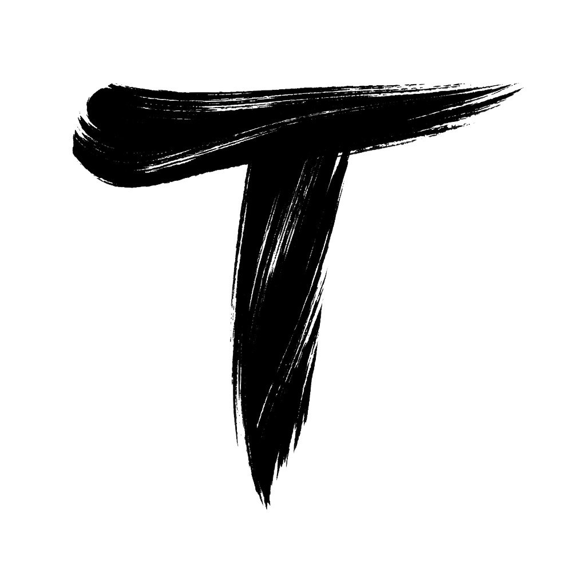

Tracto01/06
Inteligência agronômica para o campo
Seu talhão não precisa ser uma caixa-preta.
Mapas, satélite, clima, solo, relatórios e IA em um só painel para decidir com mais clareza.
Talhão 1
Painel Tracto
NDVIMonitorado
SoloImportável
ClimaEm tempo real
RelatóriosCom IA